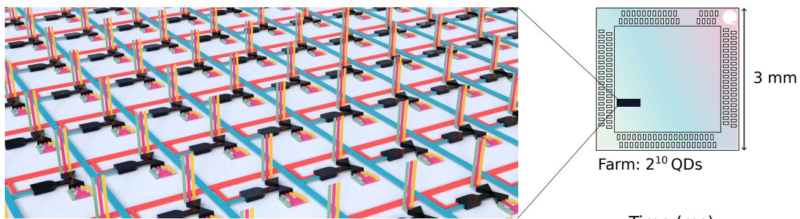
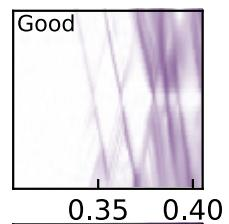
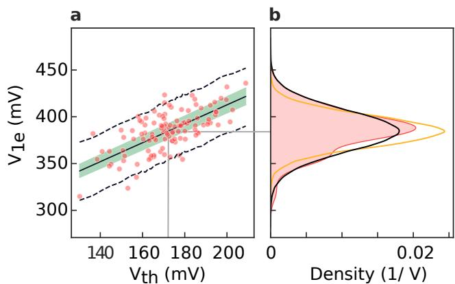
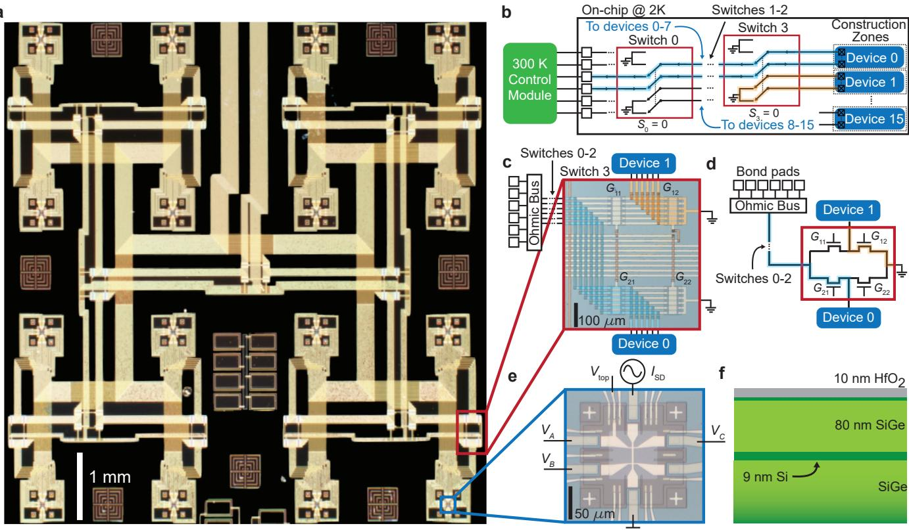
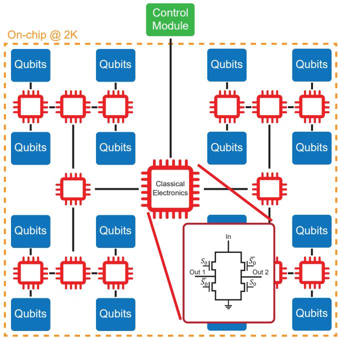

布线墙与三条出路
量子处理器规模化时，室温到低温的连线数不能随比特数线性增长，这是公认的布线墙。现有对策分三类：
- 频分复用（FDM）：多个器件/比特共用一条传输线，靠不同载波频率区分。受频率拥挤限制，目前每线约 8 个比特。FDM 也有”无谐振腔”版本：28 nm FDSOI 单片共集成双 SET + 片上跨阻放大器，1 MHz 通道间距、2.2 µs 同时读出达 99.9% 保真度——SET 电流直接频分复用、免每通道电感谐振器（见单电子晶体管词条的 CTIA 读出一节）；
- 十字交叉（crossbar）： 条线在 个比特位置相交，连线最少，但对器件均匀性要求苛刻；
- 时分多址（TDMA）：像 DRAM 一样用开关逐个接通器件，读出与控制线均可复用，灵活性与可扩展性最好。此前 dc 信号已有片外 1:36、片上 1:64 的低温开关，射频段片上仅演示过 1:3——瓶颈在于高频开关会劣化信号完整性。
1:1024 多路复用器农场（Thomas 2023）

1:1024 多路复用器件农场：(a) 三维示意——红/蓝为行列选址数字线，绿/粉/黄为模拟信号通道，整片器件阵列只占 3 mm × 3 mm 硅芯片的一角；(b) 单个晶体管截面——量子点（紫）形成于栅下源漏之间的非掺杂硅区；(c) 自动拟合首个库仑阻塞振荡线（虚线）的二维器件响应图。图源：Thomas et al. (2023), Fig. 1。
Thomas 等人在商业代工工艺上把 1024 个硅量子点器件与片上数字+模拟电子学集成，全部工作在 1 K 以下。核心是一片 1:1024 高频模拟多路复用器：行列地址线选通传输门（导通阻抗约 2 kΩ），把任一器件接到外部的谐振读出电路；全场 1024 个器件的特征数据在 5 分钟内采集完毕。器件本身是 CMOS 晶体管几何：量子点在栅下非掺杂硅沟道中形成，通过栅长（28–120 nm）与沟道宽度的设计矩阵铺开，用来统计工艺变异性。
信号完整性的极限
多路复用会不会毁掉射频反射测量的灵敏度？答案是量化给出的：库仑振荡峰的信噪比平方随积分时间线性增长，
其中 是每点积分时间，线性外推到 SNR=1 给出最小积分时间 ——它汇集了从谐振腔、开关到放大器的全链路噪声，是”这套硬件本质上能测多快”的单参数指标。该农场实测 ，优于当时单电子晶体管反射测量的最好水平：1024 路开关没有付出信号代价。农场级带宽同样对齐：SNR 的半高全宽 6.4 MHz 与谐振腔带宽 9.5 MHz 匹配，保证 TDMA 逐点切换时所有器件都落在同一高响应频区。按此指标，100 ns 积分即可得 SNR>20——全场扫描的速度上限来自谐振腔 20 ns 的上升时间而非噪声。
参数提取与工艺统计
原始二维图之外，流水线自动提取三类关键参数：首个电子加载电压 （量子点形成的栅压位置）、栅杠杆臂 、源漏耦合不对称度（点在沟道中的居中程度）。对 1024 个器件的统计给出设计规律：

农场级器件统计：(a) 9 个示例器件的二维响应图与库仑阻塞质量标签（multi 表示多个串联点）；(b) 各栅长/沟道宽度下器件类别的相对频率——28 nm 与 40 nm 栅长的单点产额最高，长栅易形成多点结构；(c–e) 首电子电压、杠杆臂与不对称度随栅长的分布。图源：Thomas et al. (2023), Fig. 4。
- 短栅长（28/40 nm）单点产额最高；栅长更长时沟道中串联形成多个点，响应变复杂；
- 栅长缩短使 分布整体下移——短沟道效应（源漏电场穿透、DIBL）压低了开启电压；
- 杠杆臂与不对称度在全场基本恒定，说明即使最小尺寸下点仍被栅良好控制、居中于沟道；
- 卷积神经网络对器件质量（好点/坏点/多点）自动分类，准确率 88%，单次平均即可完成参数提取。
预低温验证：V_1e 与室温 V_th 的关联

低温-室温关联：(a) 50 mK 下测得的首电子电压 V_1e 对室温阈值电压 V_th 作图——线性拟合（黑线）与 95% 置信带给出两者的一一对应；(b) 实测 V_1e 分布（红）与由 V_th 变异性预测的后验分布（黑）吻合，黄线为 V_th 取单值时的最优情形。图源：Thomas et al. (2023), Fig. 5。
最实用的发现是低温量子点参数与室温晶体管行为直接相关： 与同一器件的室温阈值电压 呈线性关联，观测到的 变异性几乎完全解释 的分散。这意味着量子点良率与均匀性可以在室温晶圆级测试中预估——不必把每片样品都泡进稀释制冷机再发现设计问题。对走向制造的硅量子技术，这打开了产线前工艺监测（in-line process monitoring）的通道。
外延平台上的 FET 开关树复用（Wolfe 2024）
Thomas 农场走的是”量子点本身即 CMOS 晶体管”的代工路线；Wolfe 等（UW-Madison/Sandia）在另一端给出外延 Si/SiGe 量子器件与经典电路的单片共集成：同一芯片上用场效应晶体管开关树多路复用 16 个”建造区”（每个区内可光刻任意栅定量子器件），把欧姆接触引线压缩近十倍。框架用经典互连理论的语言量化——引脚数 与器件数 服从 Rent 定律 ：无复用时 ，现代经典处理器做到 ，而容错规模的量子处理器（ 物理比特）必须把 Rent 指数压到远小于 1。
实现上，每个开关由四个 FET 组成： 共栅、 反相栅，二进制互补使开关只有两个数字态； 级开关树给出 个二进制地址 （16 区用 4 位）。此前硅上复用实现让非激活器件浮空，FET 漏极充至未知电压造成漂移与迟滞；本工作新增接地 FET 通路，让所有非激活器件钉在确定电位——这是把复用从”演示”推向”可重复测量”的关键工程修正。

FET 开关树复用方案：(a) 11.5×11.5 mm² 芯片上的 16 个建造区；(b) 器件经开关网络接室温控制模块的电路示意——蓝色为地址 S=0000 的电流路径，其余器件经新增接地通路钉在确定电位（橙色）；(c) 开关 3 的显微照片及对应的假色电流路径；(d) 四 FET 开关电路；(e) 地址 0000 建造区中的霍尔条（交流锁相测量标注）；(f) 建造区中心台面异质结构堆叠。图源：Wolfe et al. (2024)，Fig. 2。
演示负载是每个区内电子束光刻的霍尔条：四端交流锁相测出电阻率张量（、），16 个器件单次降温完成全场统计——电容单位面积均值 、相对方差仅 0.4%（栅介质质量），电子迁移率相对标准差约 10%、穿渗密度约 15%。整机在 ~2 K（泵浦 ⁴He 回路）与强磁场下运行并在阵列上观测到整数量子霍尔效应——同时验证了复用电路在”高温”（对量子器件而言）与高 B 环境的存活能力，这直接对接高温自旋比特运行的温度区间。基于此，作者提出大规模硅量子处理器的读出愿景：稀疏比特阵列 + 共享控制模块 + 片上开关路由。

带片上集成经典电路的量子处理器蓝图：蓝色为需要输入输出信号的密集比特阵列，绿色为共享控制模块（可容纳 cryo-CMOS 等），红色为路由开关阵列——插图为首位地址 控制的四 FET 开关电路。开关树使一套控制引脚被整个阵列网格共享，把处理器的 Rent 指数压向经典处理器水平。图源：Wolfe et al. (2024)，Fig. 1。
与其他概念的关系
- 射频反射测量：农场表征的物理测量层， 是其灵敏度的系统级汇总指标；
- 低温电子学：1 K 以下片上数模复用电路是低温 CMOS 走向量子处理器接口的一步；
- 电荷态识别：CNN 分类与自动参数提取把识别任务从”单器件调点”推到”农场级统计”；
- 量子点阵列与Si-MOS 量子点：商业代工 CMOS 几何既是被测对象也是复用器载体；
- 自动调控：大规模表征提供阵列调谐所需的先验统计（ 分布、杠杆臂典型值）；
- 电荷穿梭：TDMA 读出选址与穿梭传输互补，共同构成大规模阵列的访问体系。
- 高温自旋比特运行：FET 复用电路在 ~2 K 与强磁场下的运行验证了其在集成电子学温度区间的存活能力。
参考文献
- Thomas, E. J., Ciriano-Tejel, V. N., Wise, D. F., Prete, D., de Kruijf, M., Ibberson, D. J., Noah, G. M., Gomez-Saiz, A., Gonzalez-Zalba, M. F., Johnson, M. A. I., Morton, J. J. L. Rapid cryogenic characterisation of 1024 integrated silicon quantum dots (2023). DOI: 10.1038/s41928-024-01304-y；arXiv:2310.20434（QAtlas 缓存：2310.20434）。
- Wolfe, M. A., McJunkin, T., Ward, D. R., Campbell, D., Friesen, M., Eriksson, M. A. On-chip cryogenic multiplexing of Si/SiGe quantum devices (2024). arXiv:2410.13721（QAtlas 缓存：2410.13721）。
完整文献库（含各篇站内全文页）见 参考文献库。